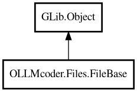

FileBase
Object Hierarchy:

Description:
public abstract class FileBase : Object
Base class for File and Folder objects.
Provides common properties and methods shared by both files and folders.
Content:
Properties:
- public string base_type { get; set; }
Base type identifier for serialization.
- public string display_name { get; set; }
Display name for binding in lists.
- public virtual string display_text_with_indicators { get; }
Display text with status indicators. Base implementation just returns
display_name.
- public virtual string icon_name { get; set; }
Icon name for binding in lists. Returns icon_name if set, otherwise a
default based on type.
- public int64 id { get; set; }
Database ID.
- public bool is_active { get; set; }
Whether this is the currently active/viewed item.
- public ProjectManager manager { get; construct; }
Reference to ProjectManager.
- public Folder? parent { get; set; }
Reference to parent folder (nullable for root folders/projects).
- public int64 parent_id { get; set; }
Parent folder ID for database storage.
- public string path { get; set; }
File/folder path.
- public string tooltip { get; set; }
Tooltip text for binding in lists.
Static methods:
Creation methods:
Methods:
Inherited Members:
All known members inherited from class GLib.Object
- @get
- @new
- @ref
- @set
- add_toggle_ref
- add_weak_pointer
- bind_property
- connect
- constructed
- disconnect
- dispose
- dup_data
- dup_qdata
- force_floating
- freeze_notify
- get_class
- get_data
- get_property
- get_qdata
- get_type
- getv
- interface_find_property
- interface_install_property
- interface_list_properties
- is_floating
- new_valist
- new_with_properties
- newv
- notify
- notify_property
- ref_count
- ref_sink
- remove_toggle_ref
- remove_weak_pointer
- replace_data
- replace_qdata
- set_data
- set_data_full
- set_property
- set_qdata
- set_qdata_full
- set_valist
- setv
- steal_data
- steal_qdata
- thaw_notify
- unref
- watch_closure
- weak_ref
- weak_unref